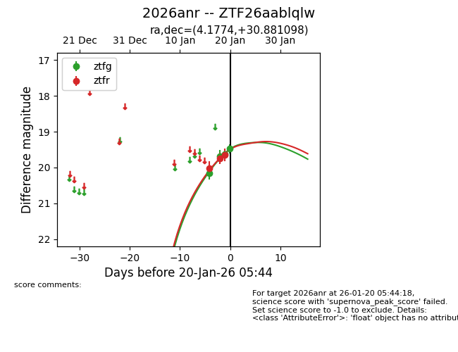
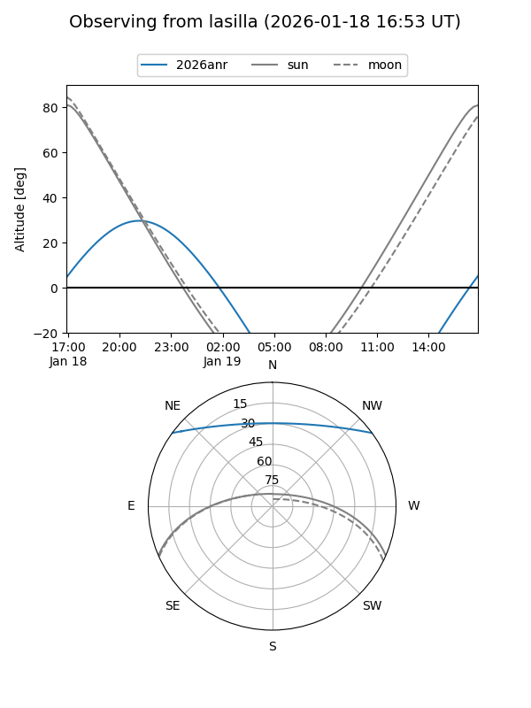
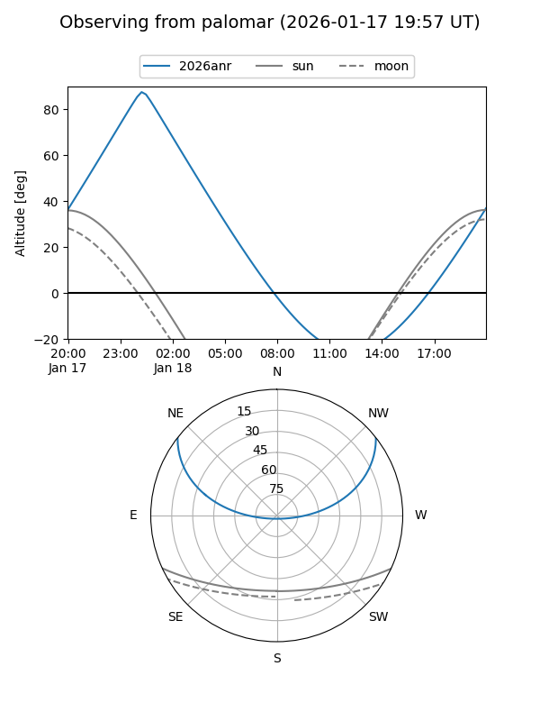
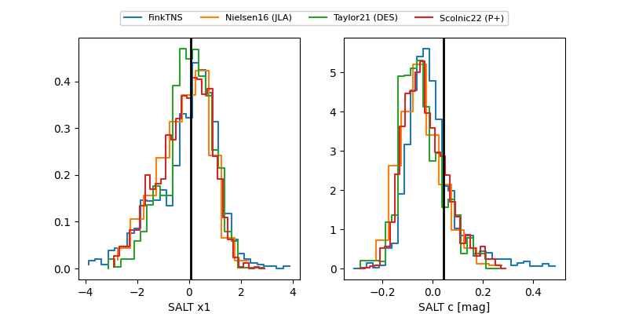

2026anr
Target 2026anr at 2026-01-20 03:16
Aliases and brokers:
FINK: link
Lasair: link
ALeRCE: link
TNS: link
YSE: link
alt names
ZTF26aablqlw (ztf,fink_ztf)
2026anr (tns,yse)
Coordinates:
equatorial (ra, dec) = 4.1774,+30.88110
equatorial (HMS+DMS) = 00:16:42.57,+30:52:51.95
galactic (l, b) = (114.2017,-31.40126)
Flags:
Photometry:
last ztfg=19.48, ztfr=19.65
4 ztfg, 3 ztfr detections
Lightcurve

Visibility


Additional plots
